Last updated: 2017-02-24
Code version: 0506d1c
Objective
This page contains code for reproducing figures reported in the paper that are related to the analysis of cell-to-cell variaiton in transcriptional gene expression.
Coefficient of variation: standardized measure of dispersion of a probability distribution, ratio of \(\sigma\) to \(\mu\).
Setup
library("data.table")
library("dplyr")
library("limma")
library("edgeR")
library("ggplot2")
library("grid")
theme_set(theme_bw(base_size = 12))
source("../../singleCellSeq/analysis/functions.R")
library("Humanzee")
library("cowplot")
library("MASS")
library("matrixStats")
source("../../singleCellSeq/code/plotting-functions.R")
Import molecule counts before standardization and transformation and also log2-transformed counts after batch correction. Biologial variation analtsis of the individuals is performed on the batch-corrected and log2-transformed counts.
#filtered annotation
anno_filter <- read.table("../data/annotation-filter.txt", header = TRUE, stringsAsFactors = FALSE)
#filtered molecule counts
molecules_filter <- read.table("../data/molecules-filter.txt", header=TRUE, stringsAsFactors = FALSE)
stopifnot(NROW(anno_filter) == NCOL(molecules_filter))
#final processed molecule counts for endogenous genes
molecules_final<- read.table("../data/molecules-final.txt", header=TRUE, stringsAsFactors = FALSE)
stopifnot(NROW(anno_filter) == NCOL(molecules_final))
#import gene symbols
gene_symbols <- read.table(file = "../../singleCellSeq//data/gene-info.txt", sep = "\t",
header = TRUE, stringsAsFactors = FALSE, quote = "")
#import cell-cycle gene list
cell_cycle_genes <- read.table("../../singleCellSeq/data/cellcyclegenes.txt",
header = TRUE, sep = "\t",
stringsAsFactors = FALSE)
#import pluripotency gene list (IPSC check)
pluripotency_genes <- read.table("../../singleCellSeq/data/pluripotency-genes.txt",
header = TRUE, sep = "\t",
stringsAsFactors = FALSE)$To
Load gene CVs computed over all cells and CV computed over the expressed cells (should go back and create this files on my own)
load("../../singleCellSeq/data/cv-all-cells.rda")
load("../../singleCellSeq/data/cv-expressed-cells.rda")
##permutation results inclusing the detected/expressed cells
load("../../singleCellSeq/data/permuted-pval-expressed-set1.rda")
##load observed statistics (MAD)
load("../../singleCellSeq/data/mad-expressed.rda")
Compute a matrix of 0’s and 1’s labeling non-detected and detected cells, respctively.
molecules_expressed<- molecules_filter
molecules_expressed[which(molecules_filter >0, arr.ind=TRUE)] <-1
molecules_expressed <- as.matrix((molecules_expressed))
Take the genes subset inclded in final data.
genes_included <- Reduce(intersect,
list(rownames(molecules_final),
rownames(expressed_cv$NA19098),
names(perm_pval_set1)) )
molecules_filter_subset <- molecules_filter[
which(rownames(molecules_filter) %in% genes_included), ]
molecules_final_subset <- molecules_final[
which(rownames(molecules_final) %in% genes_included), ]
molecules_expressed_subset <- molecules_expressed[
which(rownames(molecules_expressed) %in% genes_included), ]
molecules_final_expressed_subset <- molecules_final_subset*molecules_expressed_subset
molecules_final_expressed_subset[which(molecules_expressed_subset == 0,
arr.ind = TRUE)] <- NA
permuted_pval_subset <- perm_pval_set1[which(names(perm_pval_set1) %in% genes_included)]
expressed_cv_subset <- lapply(expressed_cv, function(x)
x[which(rownames(x) %in% genes_included), ] )
names(expressed_cv_subset) <- names(expressed_cv)
expressed_dm_subset <- expressed_dm[which(rownames(expressed_dm) %in% genes_included), , ]
dim(molecules_final_subset)
[1] 13043 564
dim(molecules_expressed_subset)
[1] 13043 564
all.equal(rownames(expressed_cv_subset$NA19098),
rownames(molecules_final_expressed_subset) )
[1] TRUE
all.equal(names(permuted_pval_subset),
rownames(molecules_expressed_subset) )
[1] TRUE
Compute drop-out rates
- dropout : lack of molecule representation for expressed gene (look at proportion of cells a given gene is undetected, the average gene expression, and estimates of gene expression noise)
drop_out <- lapply(unique(anno_filter$individual), function(ind) {
temp_df <- molecules_filter_subset[,anno_filter$individual == ind]
zero_count <- rowMeans(temp_df == 0)
return(zero_count)
})
names(drop_out) <- unique(anno_filter$individual)
drop_out$all <- rowMeans(as.matrix(molecules_filter_subset) == 0)
summary(drop_out$NA19098)
Min. 1st Qu. Median Mean 3rd Qu. Max.
0.00000 0.02113 0.21130 0.32060 0.59860 0.99300
summary(drop_out$NA19101)
Min. 1st Qu. Median Mean 3rd Qu. Max.
0.00000 0.04975 0.29350 0.36500 0.66170 0.99500
summary(drop_out$NA19239)
Min. 1st Qu. Median Mean 3rd Qu. Max.
0.00000 0.02715 0.25340 0.35060 0.65610 0.99550
summary(drop_out$all)
Min. 1st Qu. Median Mean 3rd Qu. Max.
0.00000 0.03723 0.26060 0.34820 0.64540 0.93090
Statistical test for individual difference in dropout rate: logistic regression
- logistic regression- dependent variable is a categorical variable
if(!file.exists("../../singleCellSeq//data/sig-dropout.rda")) {
library(lmtest)
drop_out_significance <- sapply(1:NROW(molecules_expressed_subset), function(i) {
fit <- glm(molecules_expressed_subset[i,] ~ as.factor(anno_filter$individual),
family = "binomial")
lrtest(fit)$P[2]
})
save(drop_out_significance, file = "../data/sig-dropout.rda")
} else {
load("../../singleCellSeq/data/sig-dropout.rda")
}
quantile(drop_out_significance, prob = seq(0,1,.1))[2] < 1e-5
10%
TRUE
sum(drop_out_significance < quantile(drop_out_significance, prob = seq(0,1,.1))[2])
[1] 1214
Main figure in paper 5: Cell to cell variation in gene expression
Expressed Cells
# mean gene expression
genes <- rownames(expressed_cv_subset[[1]])
venn_mean_rank <- gplots::venn(
list(NA19098 = genes[ which(rank(expressed_cv_subset[[1]]$expr_mean) > length(genes) - 1000 ) ],
NA19101 = genes[ which(rank(expressed_cv_subset[[2]]$expr_mean) > length(genes) - 1000 ) ],
NA19239 = genes[ which(rank(expressed_cv_subset[[3]]$expr_mean) > length(genes) - 1000 ) ] ) )
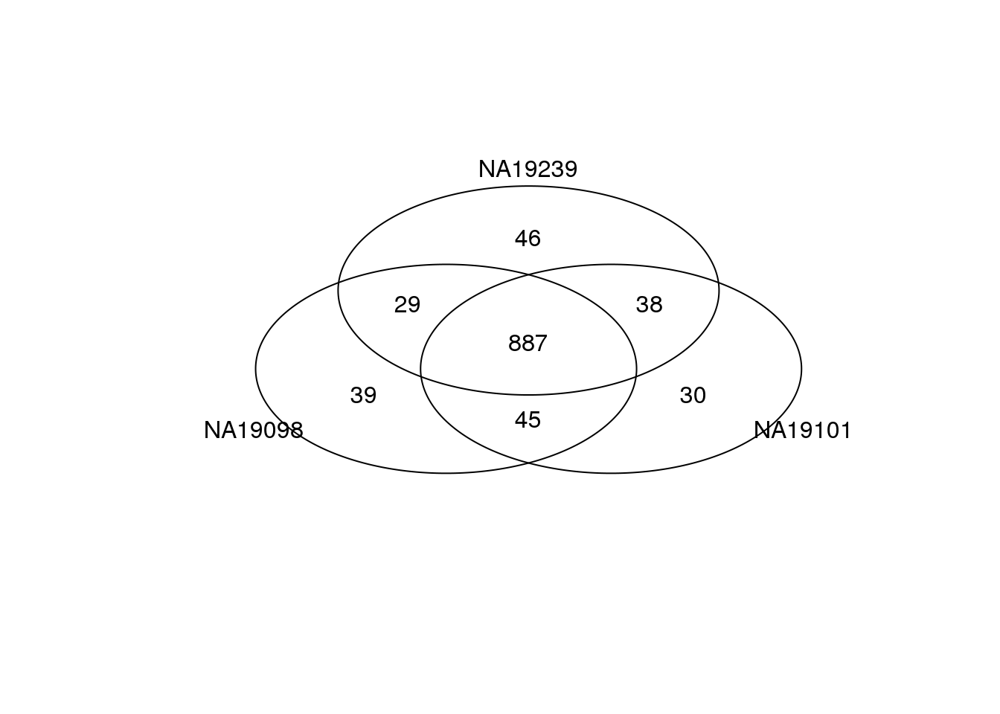
# adjusted CV
venn_cv_rank <- gplots::venn(
list(NA19098 = genes[ which(rank(expressed_dm_subset[[1]]) > length(genes) - 1000 ) ],
NA19101 = genes[ which(rank(expressed_dm_subset[[2]]) > length(genes) - 1000 ) ],
NA19239 = genes[ which(rank(expressed_dm_subset[[3]]) > length(genes) - 1000 ) ] ) )
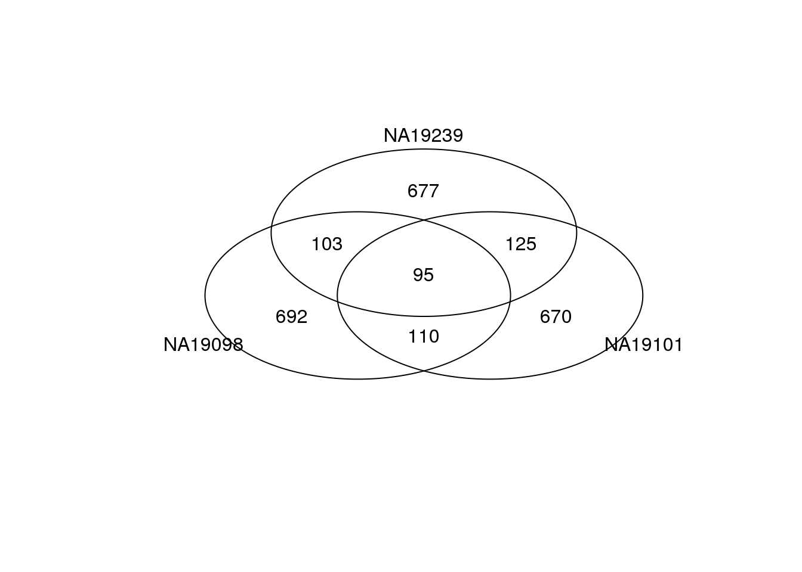 ####All cells
Venn diagram of gene-specific mean and adjusted CV for when all cells are included. For more results for when including all cells.
load("../../singleCellSeq/data/cv-all-cells.rda")
genes <- rownames(ENSG_cv[[1]])
library(gplots)
venn_cv_rank <- gplots::venn(
list(NA19098 = genes[ which( rank(ENSG_cv_adj$NA19098$log10cv2_adj)
> length(genes) - 1000 ) ],
NA19101 = genes[ which( rank(ENSG_cv_adj$NA19101$log10cv2_adj)
> length(genes) - 1000 ) ],
NA19239 = genes[ which( rank(ENSG_cv_adj$NA19239$log10cv2_adj)
> length(genes) - 1000 ) ] ))
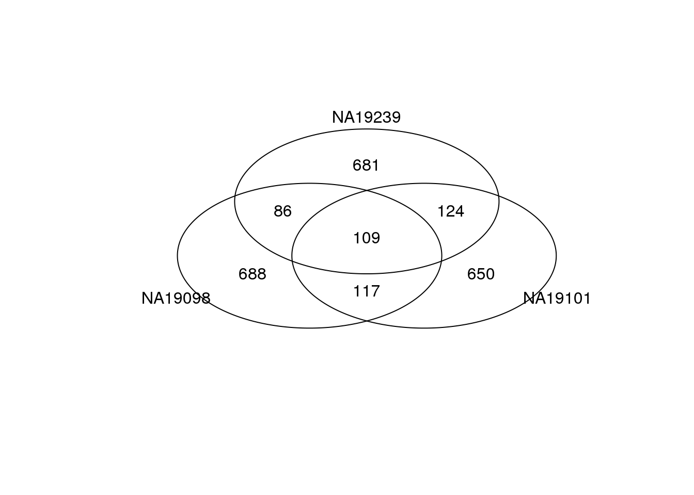
gplots::venn(
list(NA19098 = genes[ which(rank(ENSG_cv[[1]]$mean) > length(genes) - 1000 ) ],
NA19101 = genes[ which(rank(ENSG_cv[[2]]$mean) > length(genes) - 1000 ) ],
NA19239 = genes[ which(rank(ENSG_cv[[3]]$mean) > length(genes) - 1000 ) ] ) )
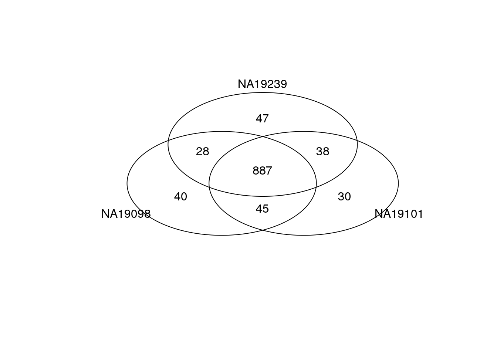
Mean CV plot
CV and mean of batch-corrected data including all cells across all three indivivduals.
par(mfrow = c(1,2))
all_cv <- matrixStats::rowSds(2^molecules_final_subset)/rowMeans(2^molecules_final_subset)
all_mn <- rowMeans(2^molecules_final_subset)
plot(y = all_cv,
x = log2(all_mn),
cex = .9, col = alpha("grey40", .8), lwd = .6,
xlab = "log2 gene mean abundance",
ylab = "Coefficient of variation",
main = "All cells, all indviduals",
xlim = c(5,17), ylim = c(0,4.5))
points(y = all_cv,
x = log2(all_mn),
col = rev(RColorBrewer::brewer.pal(10, "RdYlBu"))[
cut(drop_out$all, breaks = seq(0, 1, by = .1),
include.lowest = TRUE)],
cex = .6, pch = 16)
# cv and mean of batch-corrected data including only expressed cells
# across all three indivivduals
plot(y = expressed_cv_subset$all$expr_cv,
x = log2(expressed_cv_subset$all$expr_mean),
cex = .9, col = alpha("grey40", .8), lwd = .6,
xlab = "log2 gene mean abundance",
ylab = "Coefficient of variation",
main = "Expressed cells, all individuals",
xlim = c(5,17), ylim = c(0,4.5))
points(y = expressed_cv_subset$all$expr_cv,
x = log2(expressed_cv_subset$all$expr_mean),
col = rev(RColorBrewer::brewer.pal(10, "RdYlBu"))[
cut(drop_out$all, breaks = seq(0, 1, by = .1),
include.lowest = TRUE)],
cex = .6, pch = 16)
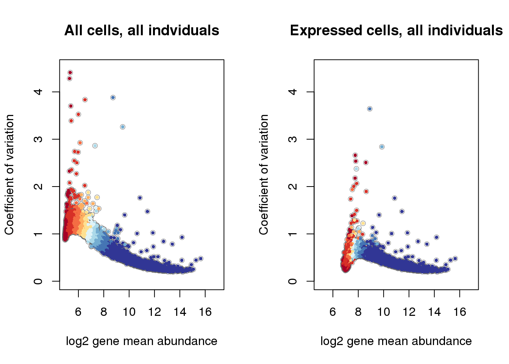
# make labels
plot(x = rep(1,10), y = 1:10,
pch = 15, cex = 2, axes = F, xlab = "", ylab = "",
col = (RColorBrewer::brewer.pal(10, "RdYlBu")), xlim = c(0, 13))
text(labels = rev( levels(cut(drop_out$NA19098, breaks = seq(0, 1, by = .1),
include.lowest = TRUE))) ,
y = 1:10, x = 3, cex = .7, adj = 0)
title(main = "drop-out rate")
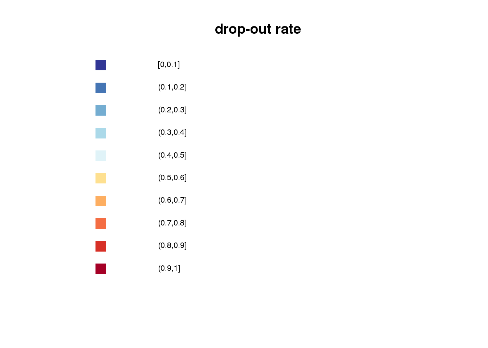 ####Additional analysis
Investigate the consistency of genes in the top ranked highly expressed list between the analysis including only the expressed cells and the analysis including all of the cells.
Mean gene expression
expressed_cells_genes <- rownames(expressed_cv_subset[[1]])
high_mean_genes_expressed_cells <- venn_mean_rank <- gplots::venn(
list(NA19098 = expressed_cells_genes[
which(rank(expressed_cv_subset[[1]]$expr_mean) > length(expressed_cells_genes) - 1000 ) ],
NA19101 = expressed_cells_genes[
which(rank(expressed_cv_subset[[2]]$expr_mean) > length(expressed_cells_genes) - 1000 ) ],
NA19239 = expressed_cells_genes[
which(rank(expressed_cv_subset[[3]]$expr_mean) > length(expressed_cells_genes) - 1000 ) ]),
show.plot = FALSE)
all_cells_genes <- rownames(ENSG_cv[[1]])
high_mean_genes_all_cells <- gplots::venn(
list(NA19098 = all_cells_genes[ which(rank(ENSG_cv[[1]]$mean) > length(all_cells_genes) - 1000 ) ],
NA19101 = all_cells_genes[ which(rank(ENSG_cv[[2]]$mean) > length(all_cells_genes) - 1000 ) ],
NA19239 = all_cells_genes[ which(rank(ENSG_cv[[3]]$mean) > length(all_cells_genes) - 1000 ) ] ),
show.plot = FALSE)
Check if the genes in the intersection set are the same: Yes, exactly the same.
# setdiff(y, x) finds the elements in y/x
# that is, elements in y but not in x
setequal(attr(high_mean_genes_expressed_cells, "intersection")[["NA19098:NA19101:NA19239"]],
attr(high_mean_genes_all_cells, "intersection")[["NA19098:NA19101:NA19239"]])
[1] TRUE
adjusted CV
expressed_cells_genes <- rownames(expressed_cv_subset[[1]])
high_adjcv_genes_expressed_cells <- gplots::venn(
list(NA19098 = expressed_cells_genes[
which(rank(expressed_dm_subset[[1]]) > length(expressed_cells_genes) - 1000 ) ],
NA19101 = expressed_cells_genes[
which(rank(expressed_dm_subset[[2]]) > length(expressed_cells_genes) - 1000 ) ],
NA19239 = expressed_cells_genes[
which(rank(expressed_dm_subset[[3]]) > length(expressed_cells_genes) - 1000 ) ]),
show.plot = FALSE)
all_cells_genes <- rownames(ENSG_cv[[1]])
high_adjcv_genes_all_cells <- gplots::venn(
list(NA19098 = all_cells_genes[ which( rank(ENSG_cv_adj$NA19098$log10cv2_adj)
> length(all_cells_genes) - 1000 ) ],
NA19101 = all_cells_genes[ which( rank(ENSG_cv_adj$NA19101$log10cv2_adj)
> length(all_cells_genes) - 1000 ) ],
NA19239 = all_cells_genes[ which( rank(ENSG_cv_adj$NA19239$log10cv2_adj)
> length(all_cells_genes) - 1000 ) ] ),
show.plot = FALSE)
Check if the genes in the intersection set are the same: NO!
high_adjcv_genes_expressed_all <-
gplots::venn(list(expressed = attr(high_adjcv_genes_expressed_cells, "intersection")[["NA19098:NA19101:NA19239"]],
all = attr(high_adjcv_genes_all_cells, "intersection")[["NA19098:NA19101:NA19239"]]))
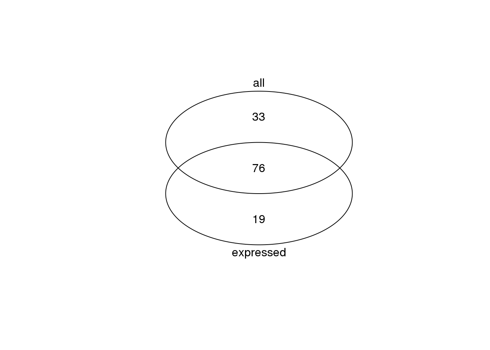 Of the genes with high CV in the expressed cell analysis but not in all cell analysis, the gene expression distribution including the expressed cells versus the expression distribution including all the cells.
high_adjcv_genes_expressed_but_not_all <- attr(high_adjcv_genes_expressed_all, "intersection")$expressed
par(mfrow = c(4,4))
for (i in 1:length(high_adjcv_genes_expressed_but_not_all)) {
plot_density_overlay(
molecules = molecules_final_expressed_subset,
annotation = anno_filter,
which_gene = high_adjcv_genes_expressed_but_not_all[i],
labels = "",
xlims = c(4,12.5), ylims = c(0,1),
cex.lab = 1.2,
cex.axis = 1.2,
gene_symbols = gene_symbols)
individuals <- unique(anno_filter$individual)
library(scales)
library(broman)
crayon <- brocolors("crayon")
cols <- c("Mango Tango", "Green", "Violet Blue")
cols <- alpha(crayon[cols], .7)
plot_density_overlay(
molecules = molecules_final_subset,
annotation = anno_filter,
which_gene = high_adjcv_genes_expressed_but_not_all[i],
labels = "",
xlims = c(0,15), ylims = c(0,1.5),
cex.lab = 1.2,
cex.axis = 1.2,
gene_symbols = gene_symbols)
individuals <- unique(anno_filter$individual)
library(scales)
library(broman)
crayon <- brocolors("crayon")
cols <- c("Mango Tango", "Green", "Violet Blue")
cols <- alpha(crayon[cols], .7)
}
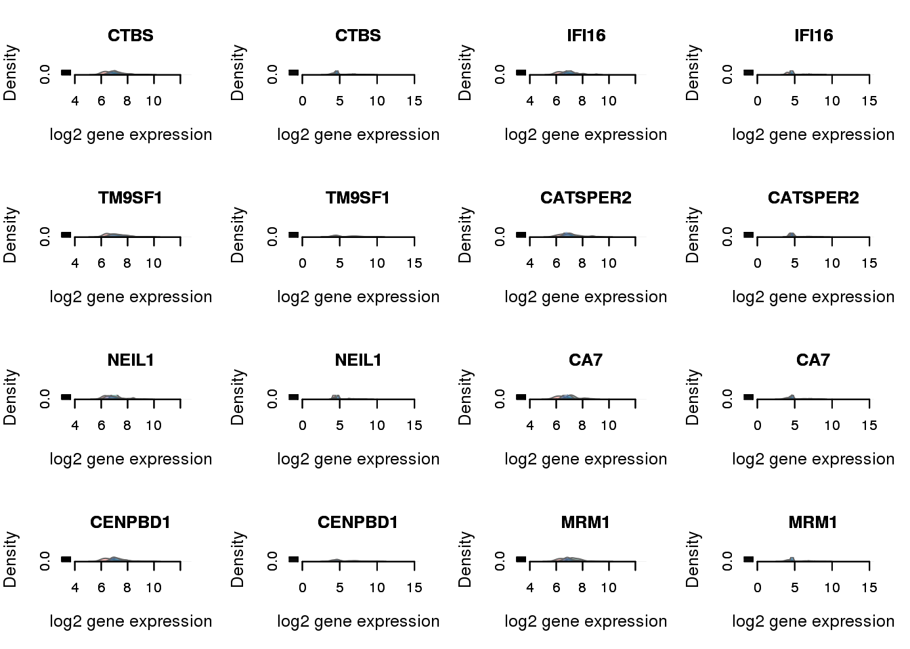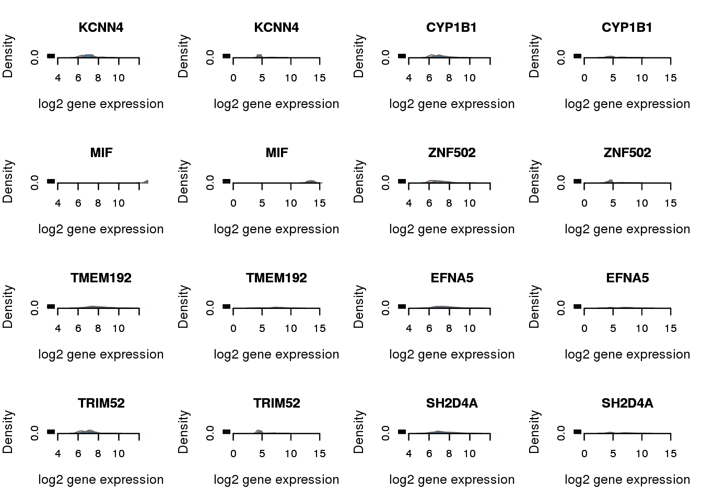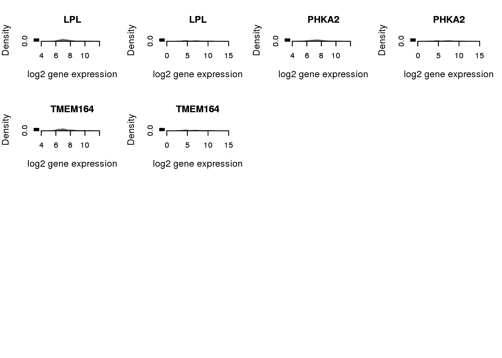
Of the genes detected as high CV in all cell analysis but not in the expressed cells, make the distribution plot including only the expressed cells and including all the cells. Only print selected examples. Basically there is no individual difference in adjusted coefficent of variation after excluding the non-detected cells.
high_adjcv_genes_all_but_not_expressed <- attr(high_adjcv_genes_expressed_all, "intersection")$all
par(mfrow = c(4,4))
#for (i in 1:length(high_adjcv_genes_all_but_not_expressed)) {
for (i in 1:8) {
plot_density_overlay(
molecules = molecules_final_expressed_subset,
annotation = anno_filter,
which_gene = high_adjcv_genes_all_but_not_expressed[i],
labels = "",
xlims = c(4,12.5), ylims = c(0,1),
cex.lab = 1.2,
cex.axis = 1.2,
gene_symbols = gene_symbols)
individuals <- unique(anno_filter$individual)
library(scales)
library(broman)
crayon <- brocolors("crayon")
cols <- c("Mango Tango", "Green", "Violet Blue")
cols <- alpha(crayon[cols], .7)
plot_density_overlay(
molecules = molecules_final_subset,
annotation = anno_filter,
which_gene = high_adjcv_genes_expressed_but_not_all[i],
labels = "",
xlims = c(0,15), ylims = c(0,1.5),
cex.lab = 1.2,
cex.axis = 1.2,
gene_symbols = gene_symbols)
individuals <- unique(anno_filter$individual)
library(scales)
library(broman)
crayon <- brocolors("crayon")
cols <- c("Mango Tango", "Green", "Violet Blue")
cols <- alpha(crayon[cols], .7)
}
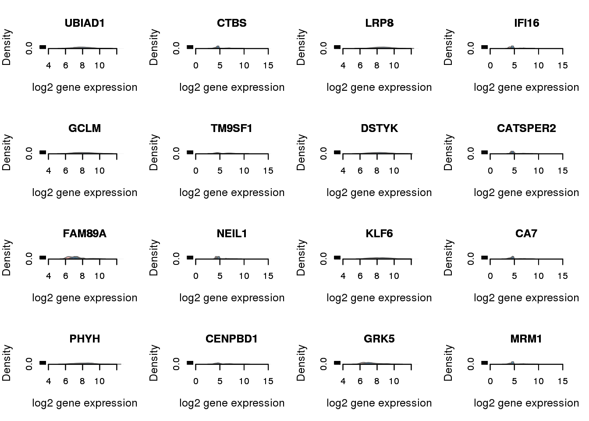
Supplemental Figure 6: Inter-individual differences in regulatory noise
#NANOG: a key pluripotency gene.
#All the other genes had significant difference between adjusted CV of the expressed cells.
query_genes <- c("NANOG", "TFPI", "SLC9A5", "SLC25A16", "SREK1IP1")
query_genes_ensg <- gene_symbols[which(gene_symbols$external_gene_name %in% query_genes), ]
## print permuted p-values of the chosen genes
pvals_tab <- rbind(names(perm_pval_set1)[which(names(perm_pval_set1) %in% query_genes_ensg$ensembl_gene_id)],
gene_symbols$external_gene_name[gene_symbols$ensembl_gene_id %in% names(perm_pval_set1)[which(names(perm_pval_set1) %in% query_genes_ensg$ensembl_gene_id)]],
perm_pval_set1[which(names(perm_pval_set1) %in% query_genes_ensg$ensembl_gene_id)] )
pdf("../../singleCellSeq/analysis/figure/cv-adjusted-summary-pois-final.Rmd/chosen-genes.pdf",
height = 8, width = 12)
#### specify the order of the plot, making same gene appear in the same column
layout( matrix(c(2, 5, 8, 11, 14,
1, 4, 7, 10, 13,
3, 6, 9, 12, 15
), nrow = 3, byrow = TRUE))
for (i in 1:nrow(query_genes_ensg)) {
df <- do.call(cbind,
lapply(unique(anno_filter$individual), function(ind) {
table(molecules_filter_subset[which(rownames(molecules_final_expressed_subset) %in% query_genes_ensg$ensembl_gene[i]), anno_filter$individual == ind] == 0)
}) )
colnames(df) <- unique(anno_filter$individual)
df <- t(t(df)/colSums(df))
barplot(df, col = c("grey40", "grey80"),
ylab = "Proportion of cells",
cex.names = 0.9,
cex.axis = 1.2,
cex.lab = 1.2)
plot_density_overlay(
molecules = molecules_final_expressed_subset,
annotation = anno_filter,
which_gene = query_genes_ensg$ensembl_gene_id[i],
labels = "",
xlims = c(4,12.5), ylims = c(0,1),
cex.lab = 1.2,
cex.axis = 1.2,
gene_symbols = gene_symbols)
individuals <- unique(anno_filter$individual)
library(scales)
library(broman)
crayon <- brocolors("crayon")
cols <- c("Mango Tango", "Green", "Violet Blue")
cols <- alpha(crayon[cols], .7)
barplot(height = abs(unlist(expressed_dm_subset[which(rownames(expressed_dm_subset) %in% query_genes_ensg$ensembl_gene_id[i]),])), col = cols,
ylim = c(0,.7), border = "white",
ylab = "Absolute value of adjusted CV",
cex.names = 0.9,
cex.axis = 1.2,
cex.lab = 1.2)
abline(h = 0)
# print MAD values
mad_val <- sprintf("%.2f",round(drop_out$all[which(rownames(molecules_final_subset) %in% query_genes_ensg$ensembl_gene_id[i])], digits = 2))
if (as.numeric(mad_val) < .01) {
mtext(text = paste0("MAD<.01"),
side=3, line = 2)
} else {
mtext(text = paste0("MAD=", mad_val),
side=3, line = 2)
}
# print permuted p-value for the adjusted coefficient of variation
if (i !=2) {
mtext(text = expression(paste(italic("p"),"<",10^"-4")), side=3)
}
if (i == 2) {
mtext(text = expression(paste(italic("p"),"=.40")), side = 3)
}
abline(h = 0)
}
dev.off()
png
2
Suppmental figure 5: permutation test results
Legend: Permutation test results for when including only expressed cells. (A) Histogram of empirical p-values based on 12,192 permutations. (B) -log10 empirical p-values are plotted against average gene expression levels. Blue line displays predicted -log10 p-values using locally weighted scatterplot smooth (LOESS). (C) Median of Absolute Deviation (MAD) of genes versus average gene expression levels. LOESS was also used to depict predicted MAD values.
# Bins average gene expression and make a boxplot of -log10 p-values
# for each bin
load("../../singleCellSeq/data/permuted-pval-expressed-set1.rda")
load("../../singleCellSeq/data/mad-expressed.rda")
plot_grid(
ggplot( data.frame(pvals = perm_pval_set1),
aes(x = pvals) ) +
geom_histogram() + xlim(0, 1) +
labs(x = "Permutation-based P-values",
y = "Count",
title = "Empirical P-values based on permutation"),
ggplot( data.frame(pvals = perm_pval_set1,
gene_mean = rowMeans(as.matrix(molecules_final_expressed_subset),
na.rm = TRUE),
bins = cut_number(rowMeans(as.matrix(molecules_final_expressed_subset),
na.rm = TRUE),
n = 10)),
aes(x = rowMeans(as.matrix(molecules_final_expressed_subset),
na.rm = TRUE), y = -log10(pvals)) ) +
geom_point(alpha = .5, cex = .2) +
stat_smooth() +
theme(legend.position = "none") +
ylab("-log10 P-value") +
xlab("Average log2-gene expression level") +
ggtitle("Gene expression level and empirical P-values"),
ggplot( data.frame(mad = mad_expressed,
gene_mean = rowMeans(as.matrix(molecules_final_expressed_subset),
na.rm = TRUE),
bins = cut_number(rowMeans(as.matrix(molecules_final_expressed_subset),
na.rm = TRUE), n = 10)),
aes(x = gene_mean, y = mad) ) +
geom_point( alpha = .5, cex = .2) +
stat_smooth(col = 11) +
theme(legend.position = "none") +
ylab("Median absolute deviation (MAD)") +
xlab("Average log2-gene expression level") +
ggtitle("Gene expression level and MAD"),
ncol = 2,
labels = LETTERS[1:3]
)
`stat_bin()` using `bins = 30`. Pick better value with `binwidth`.
Warning: Removed 16 rows containing non-finite values (stat_bin).
`geom_smooth()` using method = 'gam'
Warning: Removed 16 rows containing non-finite values (stat_smooth).
Warning: Removed 16 rows containing missing values (geom_point).
`geom_smooth()` using method = 'gam'
Warning: Removed 16 rows containing non-finite values (stat_smooth).
Warning: Removed 16 rows containing missing values (geom_point).
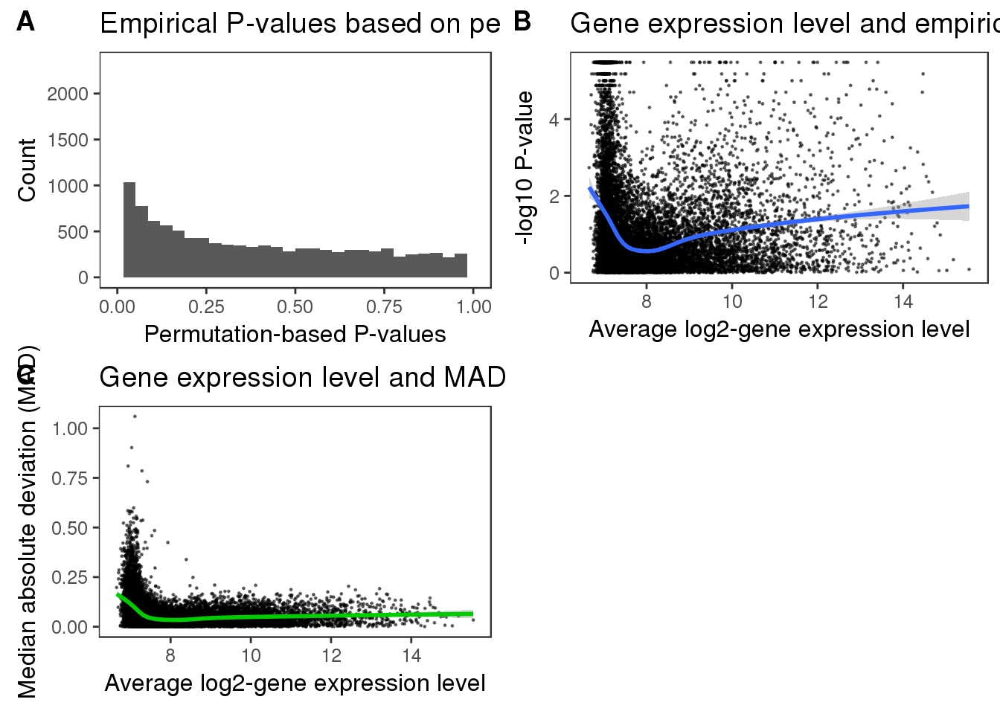 ###Supplemental figure 4: The gene specific dropout rate
Undetected cell per gene versus gene abundance, variance, and coefficient of variation
# Expressed cells
par(mfrow = c(1,3))
# abundance
plot(y = log10(expressed_cv_subset$all$expr_mean),
x = drop_out$all,
xlab = "Gene-specific dropout rate",
ylab = "log10 mean expression",
pch = 16, cex =.3,
cex.axis = 1.5,
cex.lab = 1.5, ylim = c(1,5))
lines(lowess( log10(expressed_cv_subset$all$expr_mean) ~ drop_out$all),
col = "red")
# variance
plot(y = log10(expressed_cv_subset$all$expr_var),
x = drop_out$all,
xlab = "Gene-specific dropout rate",
ylab = "log10 variance of expression",
pch = 16, cex =.3,
cex.axis = 1.5,
cex.lab = 1.5)
lines(lowess( log10(expressed_cv_subset$all$expr_var) ~ drop_out$all),
col = "red")
# mean individual adjusted-CV
plot(y = expressed_dm_subset$all*(.5),
x = drop_out$all,
xlab = "Gene-specific dropout rate",
ylab = "adjusted log10-CV",
pch = 16, cex =.3,
cex.axis = 1.5,
cex.lab = 1.5, ylim = c(-.5, 1))
lines(lowess( expressed_dm_subset$all*(.5) ~ drop_out$all),
col = "red")
title(main = "Expressed cells, three individuals", outer = TRUE, line = -1)
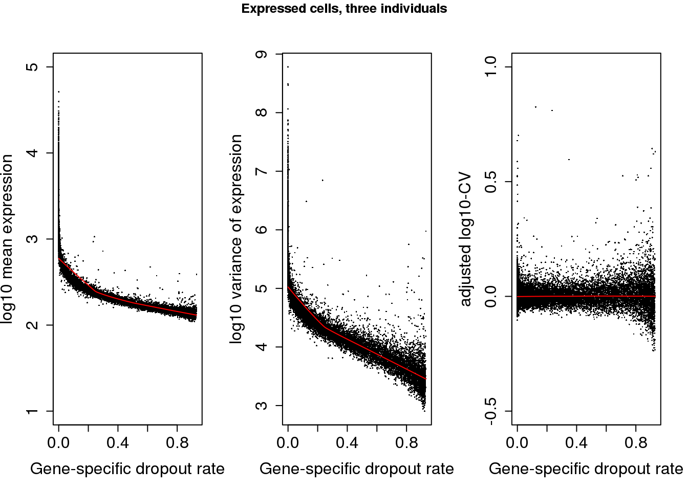
# all cells
ii_genes <- which(rownames(molecules_final) %in% rownames(molecules_final_subset))
par(mfrow = c(1,3))
# abundance
plot(y = log10(ENSG_cv$all$mean[ii_genes]),
x = drop_out$all,
xlab = "Gene-specific dropout rate",
ylab = "log10 mean expression",
pch = 16, cex =.3,
cex.axis = 1.5,
cex.lab = 1.5, ylim = c(1,5))
lines(lowess( log10(ENSG_cv$all$mean[ii_genes]) ~ drop_out$all),
col = "red")
# variance
plot(y = log10(ENSG_cv$all$sd^2)[ii_genes],
x = drop_out$all,
xlab = "Gene-specific dropout rate",
ylab = "log10 variance of expression",
pch = 16, cex =.3,
cex.axis = 1.5,
cex.lab = 1.5)
lines(lowess( log10(ENSG_cv$all$sd^2)[ii_genes] ~ drop_out$all),
col = "red")
plot(y = ENSG_cv_adj$all$log10cv2_adj[ii_genes]*(1/2),
x = drop_out$all,
xlab = "Gene-specific dropout rate",
ylab = "adjusted log10-CV",
pch = 16, cex =.3,
cex.axis = 1.5,
cex.lab = 1.5, ylim= c(-.5,1))
lines(lowess( ENSG_cv_adj$all$log10cv2_adj[ii_genes]*(1/2) ~ drop_out$all),
col = "red")
title(main = "All cells, three individuals", outer = TRUE, line = -1)
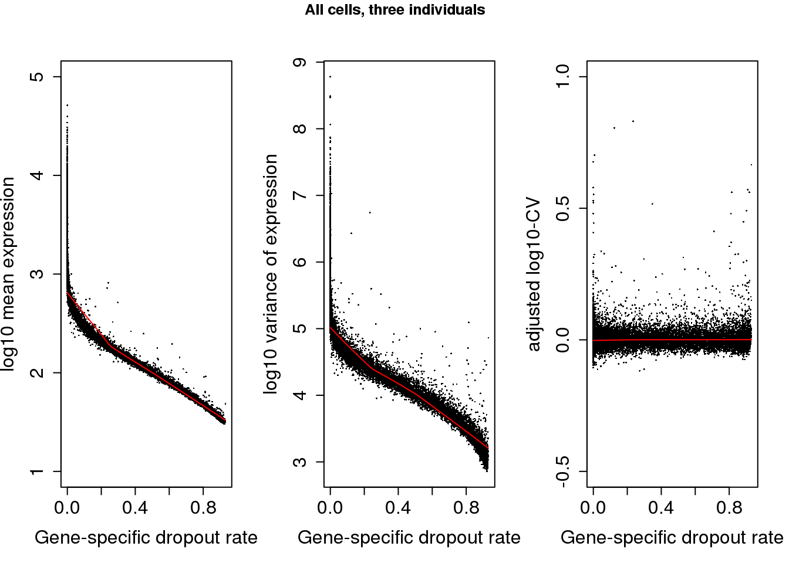
This site was created with R Markdown